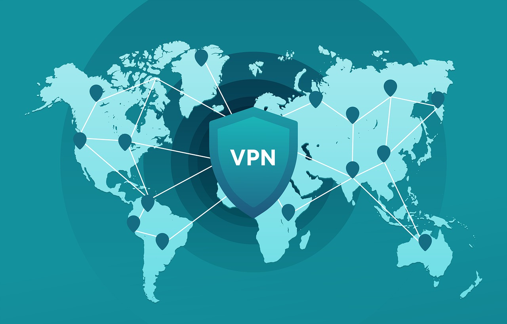

也許你聽過暗網裡的驚悚故事；
並且你非常了解其中的風險；
但你的好奇心驅使著你一探究竟；
而你正為了不知道如何進入暗網而煩惱；
那麼... 這篇文章或許可以幫到你什麼...
# 前言
免責申明！
本篇文章所教導的內容純屬學術研討，旨在探討「如何使用 Tor 這項技術進入隱藏網絡」，用於保障每位公民匿名上網的權利。
一切利用本文所提到的技術施以犯罪行為者，皆屬個人責任，本站概不負責。
本篇文章主要著重在如何進入暗網及進入暗網的注意事項，並不會有太多的介紹及原理講解。
如果你還不知道「 Dark Web (暗網) 」是什麼，之前我曾寫過一篇粗略介紹暗網的文章 —「 (18+) Dark Web 暗網｜人口販賣、兒童色情、殺人直播？電影情節真實上演！ 」，建議你先了解完再考慮觀看本篇文章。
另外「 (18+) 浮出水面的 4 個知名暗網 」這篇文章也推薦給還沒看過得你，這能使你更了解暗網。
也建議各位瀏覽暗網的裝置盡量保持乾淨，不要含有個人資訊，並且隨時做好電腦重灌的準備。
# VPN (虛擬私人網路)

「 VPN 」全名「 Virtual Private Network 」，中文為「 虛擬私人網路 」。
一般連線上網是以 User (用戶端) 對 Server (伺服端) 做直接連線，當然 Server (伺服端) 可以清楚的知道誰訪問了站點，這對於瀏覽暗網來說太危險了，誰都不想在暗網上被對方查到身份。對於瀏覽暗網，我們必須著重注意自身的匿名性及安全性。
為了解決 User => Server 的直接訪問所造成 IP 洩漏，因此在連線的過程必須加上一道保護，這道保護即為 VPN ，掛上 VPN 後的連線為 User => VPN => Server ，而這些中繼的 IP 遍佈在世界各地，若不考慮服務本身有漏洞，就算是警察也很難跨國調查，這大大了增加了反追蹤的難度。
就好像 A 想告訴 B 一件事情，同時 A 又不希望 B 知道這件事情是他說的，所以 A 選擇先告訴 C ，請 C 保密並轉達給 B。
也因為 VPN 成了與目的地連接的重要橋樑，因此必須慎選！就好比上述的情境中，C 必須是自己信任的人，反之則可能會被 B 給反追蹤，進而得知來源是 A 。
VPN 並非無敵，許多 VPN 的服務方會願意在收到一定程度的利益後，選擇出賣使用者的資料，又或者該服務的系統安全性低，導致遭到入侵進而洩漏使用者資料。(更多 VPN 詳細介紹請查閱 Wiki 維基百科)
個人推薦以下兩個 VPN 服務 — 「Proton VPN」、「Nord VPN」。
# Tor Browser (洋蔥瀏覽器)

在「 (18+) Dark Web 暗網｜人口販賣、兒童色情、殺人直播？電影情節真實上演！ 」這篇文章中有提到，暗網無法透過 Chrome、Firefox、Opera 等一般的瀏覽器來訪問伺服器，必須使用像 Tor Browser 這樣的特殊瀏覽器才行。
所以請先下載及安裝 Tor Browser，並且在連上 VPN 後，開啟 Tor Browser。
開啟後會發現，與「FireFox (火狐)」這款瀏覽器界面大同小異 (做為基底開發的)，但在瀏覽網站時，點擊網址左方，可以看到 Tor Browser 的連接狀況，從「 This browser 」到「 google.com (目的位址) 」中間經過了一些中繼點，這些中繼點一層一層的就像洋蔥的外皮般，因此才被稱作 Onion Router (洋蔥路由) 。
不過也因為經過的節點較多，相較一般瀏覽器的瀏覽速度是較慢的，若覺得這些節點速度太慢，也可以試試按下方的藍色按鈕「 New Circuit for this Site 」來更換節點。

# 注意事項

注意！
這些步驟很重要，請一定要確實做好。
- 遮蔽鏡頭
- 建議用有色膠帶貼住鏡頭，這是為了防止電腦不幸受到入侵時，保障自身隱私。
- 瀏覽器視窗禁止最大化
- 在使用 Tor Browser 時，千萬不要將視窗最大化，這會使得對方可以輕易抓取你的裝置螢幕大小及部份資訊，進而透過這些資訊追蹤你的裝置。
- 不使用真實資料
- 在暗網上絕對不要登入個人帳號，不論是 Google、Facebook、Instagram 等。最好連 E-Mail 也重新辦個新帳號用於暗網，並且該帳戶不在個人電腦及未連上 VPN 時登入。
- 非必要時，請關閉 Javascript
- 關閉網頁的 Javascript 運作可以得到更多的安全保障，當然這可能會使得網頁部份資訊無法成功載入。
- 危機處理
- 一旦發現任何不對勁的狀況，請立即拔掉網絡線。
- 防止詐騙
- 暗網上的交易主要是以虛擬貨幣來進行，這東西是不受政府保障的，因此暗網上的詐騙非常盛行，我敢說約 99 ％ 賣家都是詐騙，例如常見的「 超低價販賣 Iphone 手機 」、「 比特幣洗錢 」、「 付費解鎖論壇資訊 」等。除非你信任該服務，並且確定該服務合法，否則請不要在暗網上消費。
- 另外，你也必須知道「 比特幣 (或其他虛擬貨幣) 並非絕對匿名 」。除非你懂的洗錢，否則對方或許可以輕易的透過其他交易所的門路反追蹤該比特幣錢包的主人！(推薦使用冷錢包，可以更有效的預防該狀況的發生)
- 不輕易相信任何人
- 請不要在暗網上輕易的信任對方。(準確來說... 表網也是)
# 進入暗網
在暗網裡，也有個類似「Wiki 維基百科」的頁面，稱作「 The Hidden Wiki (隱藏維基) 」，又稱「 裡維基 」、「 黑暗維基 」。該頁面允許任何人匿名的編輯、提供暗網連結。
由於該服務是不經審查的，這也使得該網站時常含有非法內容在內，包括網路服務、電子商務、洗錢、契約暗殺、網路攻擊、各式禁運品、人口販賣、炸藥製作、武器、毒品、假幣、偽造身分證件、偽造信用卡、麻醉藥品等，不過對暗網好奇的你... 不就是衝這個而來的嗎？ (更多 Hidden Wiki 的詳細資訊請詳閱 Wiki 維基百科)
- Hidden Wiki (隱藏維基) (地址非常多，可能隨時變更)
- hiddenw3s6tmzdwo.onion
- hiddenwiki7wiyzr.onion
- zqktlwiuavvvqqt4ybvgvi7tyo4hjl5xgfuvpdf6otjiycgwqbym2qad.onion
另外推薦幾款好用的搜索引擎：
- Ahmia
- Not Evil
- hss3uro2hsxfogfq.onion
- DuckDuckGo
# 結語
瀏覽暗網有一定的風險，就好像一把刀，用的好是工具，用不好賠了命。
必須再次強調本站僅做學術研討，你有絕對的權利選擇是否這麼做，並且你所做的選擇皆屬個人意願，後果須自行承擔，與本站無關。